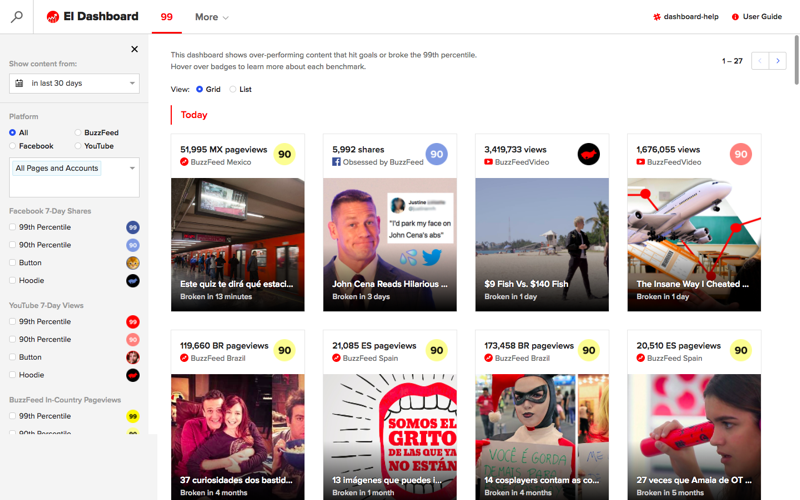
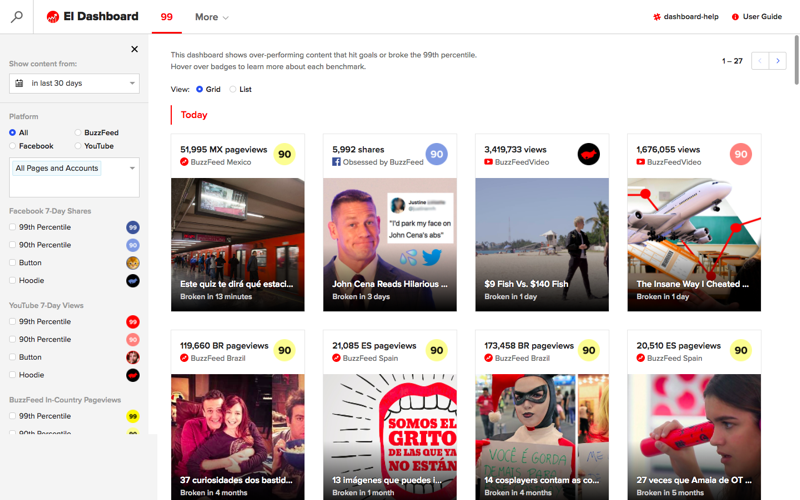

BuzzFeed’s El Dashboard
Building a suite of analytics tool to empower data-driven decisions

BuzzFeed’s El Dashboard
Building a suite of analytics tool to empower data-driven decisions
BuzzFeed creates over 600+ videos, posts, and graphics a week, publish them to BuzzFeed properties and social platforms, and track their performance data. The knowledge held in this data helps us to understand what content resonates with our readers. Therefore power the feedback loop (Create ➝ Publish ➝ Learn ➝ Iterate.) for our content creators to make high quality, engaging content.
Why invest in our own analytic tools?
So, what is the design process?
Over the course of 18 months, I led design and user problems of a suite of 12 internal dashboards at BuzzFeed that provides core data and insights to our editorial and business team. For each product and feature, the typical process goes like this:
Define the problems by deeply understanding the user and business needs. Methodology & tools used for this step include Research, interview, workflow/product audit, design workshop, diagraming, worksheets and thought exercises.


Explore the solutions in a broad spectrum to validate the viability, usability and feasibility. Methodology & tools used for this step include low-fidelity paper mocks, click-through prototype, live prototype in 3rd party tools and live code, and spreadsheet.


Refine & validate the solution that is simple, effective and scalable. by building a strong design system, which includes UI blueprint (an interface "floorplan” that would grow and expand gracefully), UI pattern (a tool specific pattern that is an extension of BuzzFeed's Solid Pattern library) and Graph component.


Promote and Training is the final, but essential step.


Different tools, Different purposes
In 18 months, El Dashboard suites has grown and expanded to 4 categories of tools: Content Insights, Signal, Discovery & Experiment,and Platform Health.
1 Content Insights
Content insights dashboards focus on provides the core metrics of a piece of content. Powered by a set of robust filters, search and sort functions, the table-based dashboard is efficient and flexible for exploring a large dataset. Users can look up “What are the most popular videos about Béyonce?”, “What are the most commented news post from last week?”, and then drill down to dive into the detail stats.


2 Signals
Even though looking up content performance has gotten a lot easier, it is still hard to discover the super viral content so our editorial team can quickly learn and go after the success. To surface any noteworthy insights, we built a few products that surface trending content in real-time and top performing content that broke the benchmark at 90th and above percentile. The visual-centric design for dashboards, badges, and slack notification enable users to identify the outliers quickly.
 

3 Discovery & Experiment
Enable everyone at BuzzFeed to search and explore BuzzFeed’s catalog of 3 millions of videos, graphics, and posts by keyword search, job-to-be-done categorization, and experiment tags.


4 Platform Health
Platform health tools allow our management team to closely monitor the long-term trend of our content distribution platforms by tracking the content output and performance metric in time-series graphs.


Outcomes
El Dashboard continues to grow and thrive as the core analytic tools for the company. With over 500 active users a month, (35% of the entire organization), users are continuously relied on our tools to learn and make the data-driven decision every single day. The dashboard helps us to discover our users love food content, especially fluffy and jiggly dessert.
What I learned (and am still learning)
Role: Design Lead. Amazing Team: 5 engineers, 4 data scientists, 1 product managers, 1 product support.